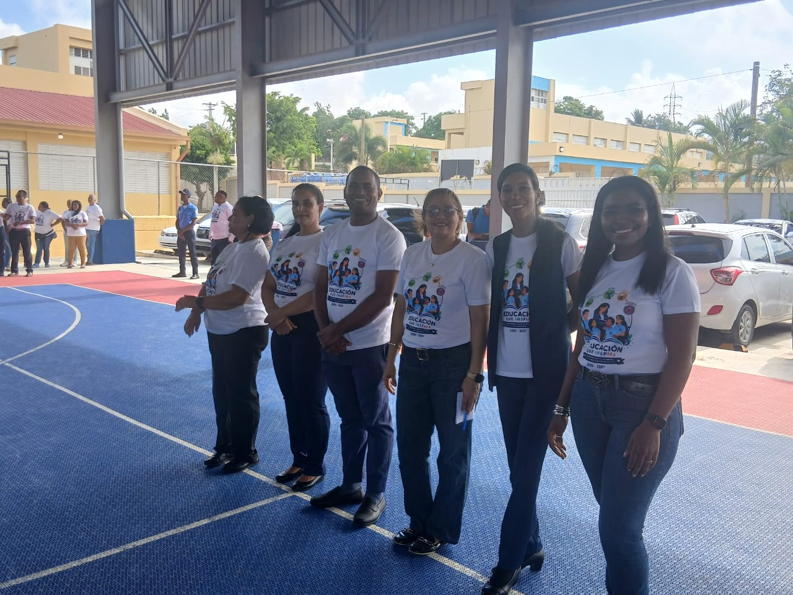
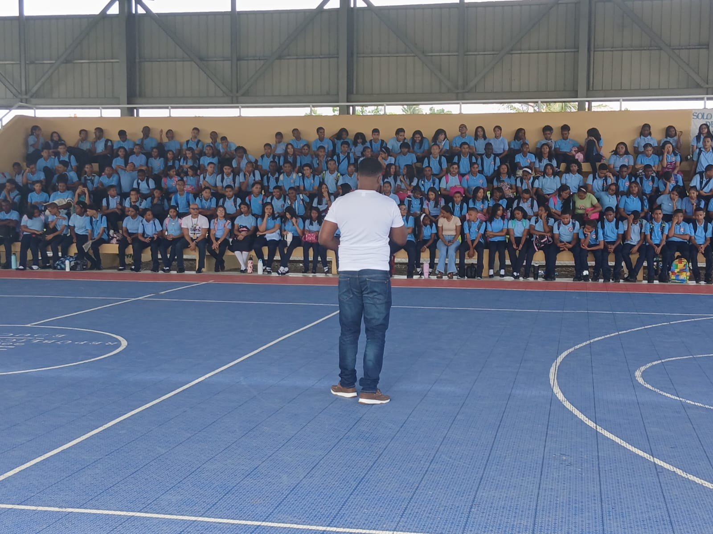

El Politécnico Plinio Martínez dio inicio al año escolar 2026-2027 con entusiasmo, alegría y el compromiso de continuar ofreciendo una educación técnica de calidad, orientada a la formación integral de sus estudiantes.
Este nuevo período académico representa una oportunidad para renovar metas, fortalecer los aprendizajes y desarrollar las competencias necesarias para afrontar los desafíos del futuro. Con el acompañamiento del equipo directivo, los docentes, el personal administrativo y las familias, nuestro centro reafirma su compromiso con una educación basada en los valores, la innovación, la responsabilidad y la convivencia armoniosa.
Damos una cordial bienvenida a nuestros estudiantes, tanto a quienes continúan su trayectoria formativa como a quienes se integran por primera vez a nuestra comunidad educativa. Les animamos a asumir este año escolar con entusiasmo, dedicación y disposición para aprender, crecer y construir nuevas oportunidades.
¡Bienvenidos al año escolar 2026-2027! Juntos seguimos construyendo un futuro lleno de conocimientos, valores y oportunidades.
